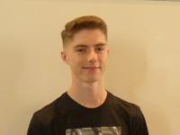

BOLLIAND Matthieu
C’est lors de ma Terminal S que m’ai venu l’idée de l’informatique, particulièrement grâce à l’option ISN où j’ai fais mes premiers pas en programmation qui m’ont d’ailleurs beaucoup plu, mais aussi en me rendant compte que l’informatique prend déjà une place importante dans notre système et en prendra encore plus dans le monde de demain. Après avoir fais du JavaScript, j’ai toujours aimé apprendre de nouvelle manière de coder et c’est pour cela que notre projet me tient à cœur car la VR est une nouvelle manière de jouer, qui est de plus en plus apprécié et utilisé, il y aura plein de chose à apprendre, que je pourrais réutiliser plus tard pour des projets personnels. De plus, Pac-Man est un jeu très connu et qui plaît à tout le monde, ainsi la VR offrira une nouvelle expérience de jeu. C’est donc pour tout cela que je suis très motivé d’arriver à bout de ce projet.
COTTONI Nicolas
Je viens d’une petite campagne dans l’Ain, j’ai passé mon enfance à jouer dehors ou à la console. Depuis quelques années j’ai aussi commencé à faire du skateboard avec mes amis, et c’en ai devenu un hobby, malheureusement depuis mon départ à Lyon j’ai plus l’occasion d’en faire. Je suis issu d’une terminale S SVT, et je n’ai acquis aucune base en informatique au lycée puisque l’option ISN n’était pas disponible. J’ai cependant, par moi-même, appris à coder en HTML et CSS. C’est donc depuis le collège que j’attends d’apprendre réellement à coder, accompagné de professeurs. Appréciant les nouvelles technologies, et les jeux arcades cette idée de projet m’a vraiment plu. Depuis mon enfance les jeux vidéo ont prit une grande partie de mon temps et avoir l’occasion d’en réaliser un me fait extrêmement plaisir.
FLAMMAND Benoit
Je viens d’un lycée de campagne, et je suis sur Lyon pour EPITA depuis cette année. Venant de la campagne, jouer avec les amis était quelque chose d’obligatoire. Puis ils m’ont fait commencer les jeux vidéos, ce à quoi je jouais déjà en plus de tâter le vieux Windows de mon père. L’informatique est donc quelque chose qui m’a depuis toujours passionné. C’est aussi lors de ma Terminale S-SI, option ISN, que j’ai pu découvrir plus amplement les sciences de l’ingénieur ainsi que l’informatique et la programmation. Utilisant le Python lors de petits projets, j’ai pu apprendre quelques bases de programmation. De plus, les sciences informatiques et l’électronique sont des choses qui prennent de plus en plus part dans notre société actuelle. L’informatique est pour moi un domaine en pleine expansion avec tout à faire, créer et développer, mais aussi à sécuriser et à protéger ! J’ai pu rencontrer grâce à l’école des personnes ayant les mêmes centre d’intérêts que moi, et je suis d’autant plus fier de ce groupe de projet, motivé et en plein apprentissage ! Je suis motivé pour apprendre, la POO ainsi que d’apprendre de mes erreurs. Ce projet de semestre au sein d’EPITA est pour moi un réel défi mais en même temps une vraie motivation.
ROBIN Valentin
Issu d'une Terminale S 'SVT', je n'ai pas pu faire l'option 'ISN' dans mon lycée puisqu’il ne l'a proposait pas, donc je n'ai pas pu faire d'informatique durant mon programme de Terminal. Cependant, j'étais passionné par les nouvelles technologies et l'informatique en général, ce qui m'a permis de m'orienter et de clarifier mon choix pour ma vie futur. Mes expériences en programmation sont assez médiocres, elle ne comporte seulement quelques connaissance dans l'utilisation de programmes basiques ou jeu sur la calculatrice et des mini projets en Arduino. Ce qui m'a permis de rattraper mon temps perdu et de posséder des expériences en programmation a commencé cette année en intégrant l'EPITA. Tandis que je n'avais jamais vraiment coder avant cette année, je suis très motivé et intéressé par ce domaine-là. Ce projet va me permettre d'acquérir de nouvelles compétences en informatique et des méthodes de travail en groupe.